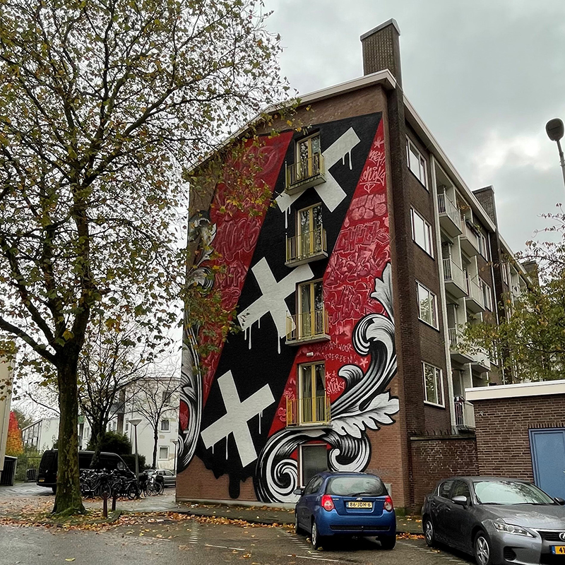
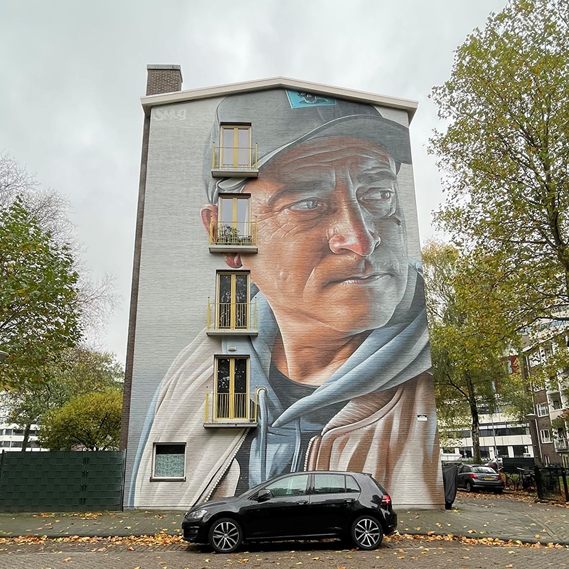

Street Art Platanenweg
You will see some amazing streetart on the sides of multiple buidlings. These artworks are part of a project called "If walls could speak" in 2019. There are in total 10 artworks to be seen on 5 buildings. Can you find them all?